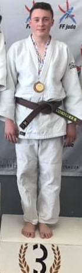

Programmation et Jeux Vidéo
J'espère que ce projet en HTML et CSS (que j'ai appris tout seul grâce à plusieurs sites internet) permettra de vous montrer ma motivation pour le domaine informatique. Je vous explique quelles ont été mes difficultés progressives pour ce projet.
Je continue d'apprendre seul la programmation en Python. Je vous mets le jeu du pendu que j'ai créé.
Lors du Cyber Week de Rennes, j'ai découvert le site ROOT ME auquel je me suis inscrit : j'ai ainsi démarré la cybersécurité.
J'ai validé ma certification PIX.
Je suis passionné de jeux vidéo sur PC (clavier), PS4 et Switch.
Je joue à Minecraft en anglais ce qui m'a permis d'apprendre les matériaux de construction en anglais
Je trade sur Rocket League en anglais: je fais des échanges d'item, d'objets.
De cette façon je pratique déjà beaucoup l'anglais en chattant avec des anglais ou des américains.
Le Judo

Je pratique le judo depuis mes 5 ans à raison de 3h par semaine minimum. Je suis ceinture marron et suis en train de passer ma ceinture noire pour
laquelle j'ai pour l'instant obtenu mes UV 2. Il me reste des points à obtenir en compétitions, mais celles-çi sont pour l’instant freinées par la COVID. Mes Katas sont en préparation.
J’aime ce sport car c’est à la fois un sport individuel et un sport d’équipe. Nous avons des compétitions départementales et régionales
régulièrement qui nous demandent de la rigueur, de la concentration, de la technique et de la discipline. Ce sport m’aide à me dépasser et je pense
qu’il m’aide aussi dans mon quotidien : je sais analyser rapidement une situation pour prendre une décision.
Les mangas, le dessin et la culture asiatique
Je suis passionné par les mangas: Demon Slayer, Sword art online, Naruto, One Piece et bien d'autres. Je les regarde aussi en animés sur Netflix en Japonais, Chinois ou Coréen, en sous titré français. Pourquoi ne pas faire un stage au Japon ou en Corée pendant mes études ? J'adorerais!
Au collège je participais le midi à l'atelier BD car j'adore aussi dessiner. Ce qui m'a valu cette année en terminale un 10/10 sur le projet en histoire sur Le Conseil National de la résistance et l'Etat Providence.
Le cinéma : un travail d'équipe
J'adore le cinéma. Je regarde les films d'action, les thrillers, les animés.
J'ai d'ailleurs choisi l'option Cinéma et Audiovisuel depuis la seconde dans mon lycée par curiosité pour ce monde. Elle m’a permis d’apprendre à écouter, à argumenter
mes choix, à trouver des solutions, à travailler en équipe mais aussi en toute autonomie.
Le ciméma est un travail en équipe et chacun y a son rôle à jouer. On doit réaliser un film et pour cela, trouver les acteurs, travailler les prises de vue, les angles des caméras, créer les scénarios et encore pleins d'autres choses intéressantes.